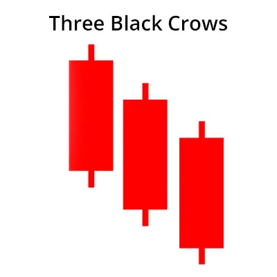

திரி விற்று வார முனைவு ஒரு வர்த்தக முனைவு, அது சந்தையின் மேலேற்ற சார்ந்த சுழற்சி
மற்றும் கீழ்வரும் சுழற்சியை இயக்கும். இந்த முனைவு மூன்று
கீழ்வரும் 'கந்தில்ஸ்டிக்ஸ' மூலம் உருவாக்கப்பட்டது. ஒவ்வொரு 'கந்தில்ஸ்டிக்' உக்கிரத்துக்கு
'black crow' என்று அழைக்கப்படுகிறது.